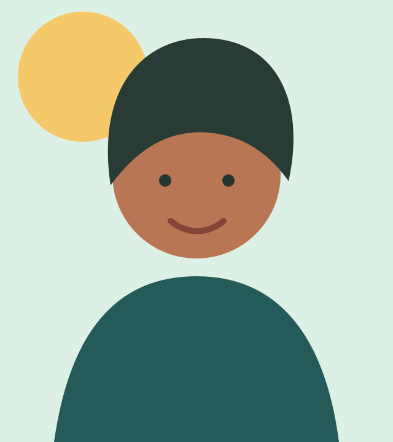
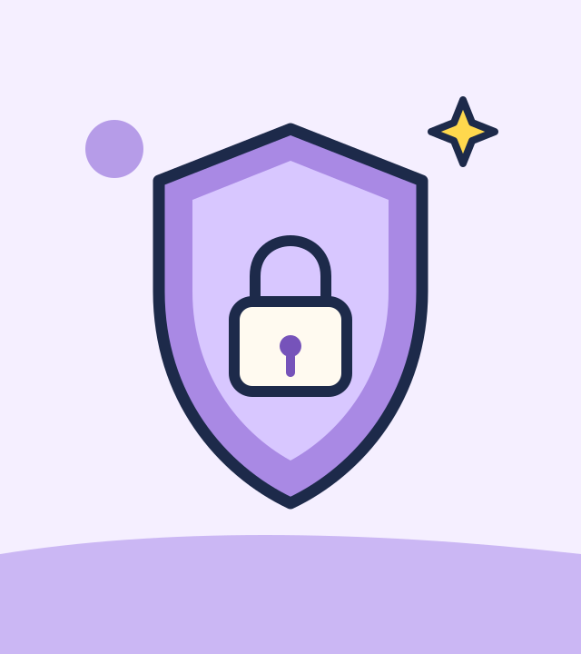

Product decisions
Finding user risks, defining priorities, and choosing a focused first version.
Student product + engineering team
Northstar is a three-person team combining product thinking, software engineering, cybersecurity, and a habit of learning by building.
01 — Our overview
We work from the problem outward: understand the person using a product, identify the important trade-offs, then build a dependable solution.
Our perspectives complement each other—product prioritization, full-stack delivery, mobile applications, games, and teaching technical ideas.
Start a conversation →02 — What we bring
We connect the decisions behind a product with the systems that make it work in practice.
Finding user risks, defining priorities, and choosing a focused first version.
Building full-stack, mobile, and browser experiences with deliberate technical trade-offs.
Leading teams, tutoring others, and making complex ideas easier to work with.
03 — The collective
 View portfolio →
View portfolio →Aspiring product manager
Engineering-backed product thinking, from user problems to shipped experiences.
See Thong’s portfolio →
View portfolio →Software builder
Building reliable applications, games, and learning experiences with care.
See Tham’s portfolio →
View portfolio →Cybersecurity student
Finding, understanding, and helping prevent security risks in practical software.
See Linh’s portfolio →